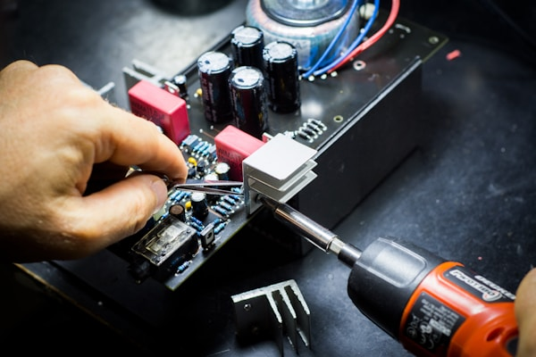

Closed Circuit Television (CCTV)
Mdukazi Projects provides state-of-the-art home and business security systems to help protect your premises. Our systems combine motion detection, entry point detection, CCTV and remote access. A customised security system is installed by an Mdukazi Projects consultant who assesses the layout and recommends the components needed to maximise security.
Enterprise ITC Solutions
Dedicated Internet Access Solutions
Mdukazi Projects offers a range of dedicated business Internet access solutions available over various access mediums to deliver a premium data solution suitable for all business applications.
Features
- Dedicated data service
- Fixed monthly pricing
- Uncapped & Unshaped
- Guaranteed speeds & always-on
- 24/7 Network monitoring
- Various speeds available
Benefits
- Scalability and flexibility
- Cost control and management
- Real-time applications
- High reliability
- SLA-enforced performance
- Flexible access options
Microwave / Metro Ethernet

Mdukazi Projects is a microwave-based last mile access medium using unlicensed and licensed wireless spectrum to provide high capacity, high availability, and guaranteed-speed connectivity solutions.
NMS Monitoring Solutions
World-class open source network monitoring systems trusted by some of the world's largest organisations. Easily monitor availability, uptime and response time of every node on the network.

Telco, ISP & Cellular Highsite
A dedicated and highly specialised division of Mdukazi Projects focused on planning, supply, build and commissioning of services to fixed line Telcos, wireless GSM carriers and ISP markets. We are currently vendors to both of South Africa's fixed line network operators. Projects include: Fibre longhaul, FTTH, Router Installations, DC power connections, Microwave installs and LAN cabling.
LAN Cabling
Every cabling project starts with a detailed design and consultation process. All installations are continuously managed and documented to ensure standards compliance. Our client handover includes detailed labeling schedules, professional CAD drawings and test results.
Fibre Solutions

Mdukazi Projects high-performance, enterprise-grade dedicated internet access gives business customers access to the same fibre infrastructure our wireless network has been built on.
Advantages:
- Speeds of 5Mbps to 10Gbps
- Under 5ms Latency
- SLA repairs within 4 Business Hours
- Dedicated fibre pair, not shared
- Low to no contention ratio
Wireless & VPN
Mdukazi Projects has built one of the best fixed wireless access networks in South Africa, enabling home and business customers to experience unmatched speeds and reliability. Real speeds of up to 1Gbps can be realised for enterprise customers.
IT Support & Data Recovery
We provide dedicated IT support services for homes, small offices, and schools. From installing WiFi networks to hardware sales and virus removal, our team is ready to help.